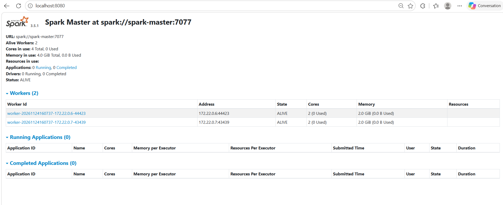
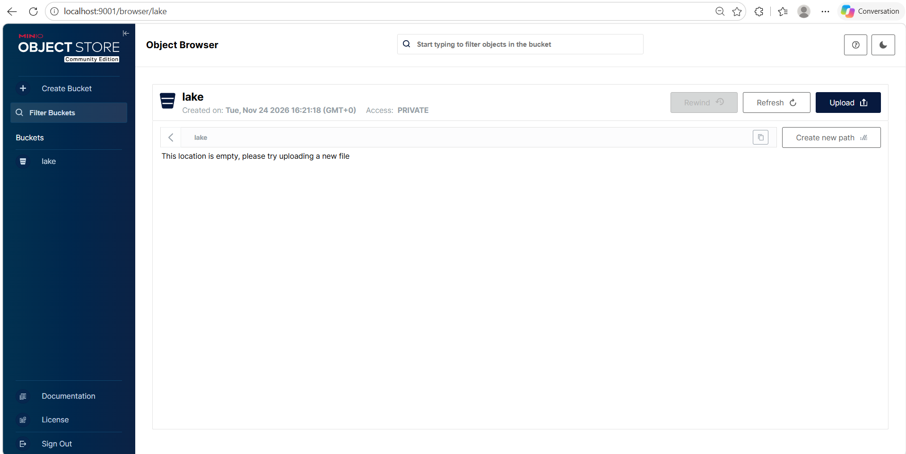
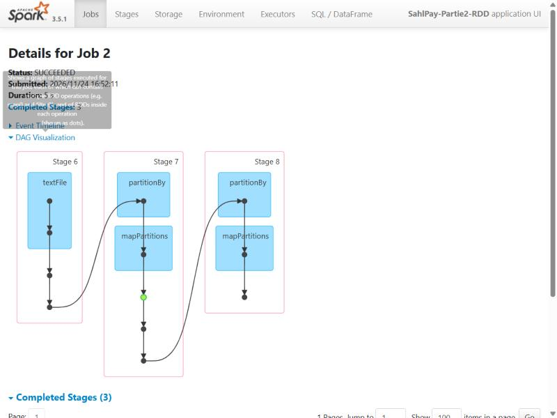
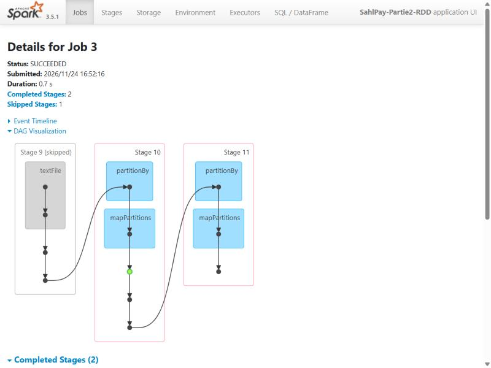
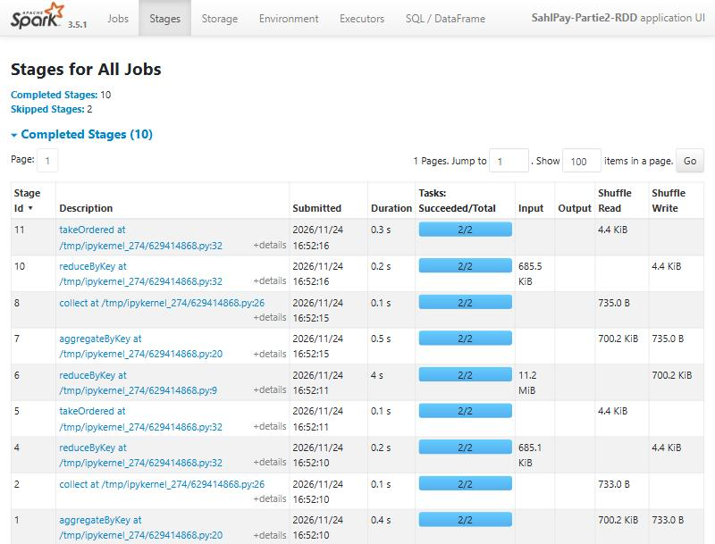
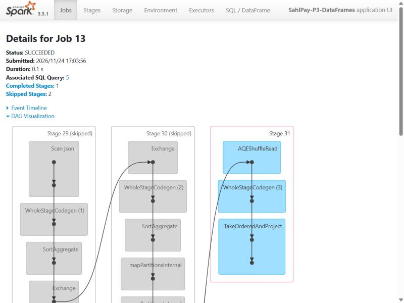
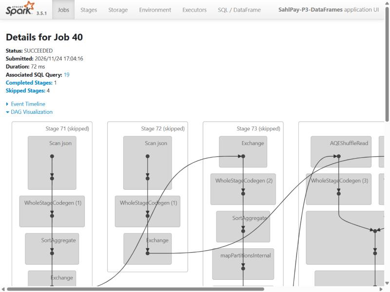
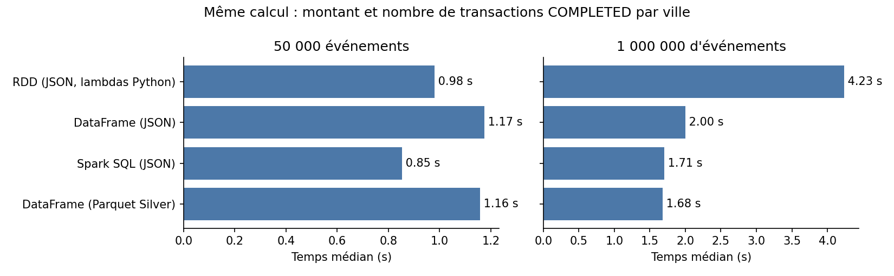

Suivi des paiements en temps réel et détection de fraude avec Apache Spark, Kafka, GraphX et GraphFrames
producer.py → Kafka (3 partitions) → Spark 3.5 (Master + 2 Workers) → MinIO s3a://lake (Bronze → Silver → Gold)
L'environnement est décrit dans un unique docker-compose.yml. Il contient :
minio-init qui crée le bucket lake ;apache/spark:3.5.1-python3, 2 cœurs et 2 Go par Worker) ;Le topic transactions a été créé avec 3 partitions. La configuration Spark est centralisée dans common.py : master, connecteur S3A vers MinIO, extensions Delta et packages Kafka/Delta.
Version Spark : 3.5.1 Master : spark://spark-master:7077 appName : SahlPay Cœurs (defaultParallelism) : 4
Topic: transactions PartitionCount: 3 Partition: 0 Leader: 1 Replicas: 1 Isr: 1 Partition: 1 Leader: 1 Replicas: 1 Isr: 1 Partition: 2 Leader: 1 Replicas: 1 Isr: 1
$ mc ls local/ [2026-11-24 16:21:18 UTC] 0B lake/
Une première exécution avait affiché defaultParallelism = 2. Cette valeur additionne les cœurs des executors déjà enregistrés au moment de l'appel, et le second executor n'était pas encore connecté. Le notebook attend désormais que les 2 executors soient enregistrés avant d'afficher la valeur.


lake créé.jupyter. Il exécute notre programme, transforme les opérations en DAG puis en stages et tâches, les planifie et récupère les résultats des actions (collect, show). Il héberge la Spark UI (port 4040). spark.driver.host=jupyter permet aux executors de le joindre.spark://spark-master:7077). Il connaît les ressources des Workers et attribue des executors aux applications. Il ne fait aucun calcul.spark.executor.memory=1g). Ils exécutent les tâches en parallèle, lisent les données dans MinIO via S3A, conservent les partitions en cache et écrivent les fichiers de shuffle.SparkSession. Il ouvre la connexion au Master, obtient les executors et sert à créer les RDD (sc.textFile). La SparkSession l'enveloppe et ajoute l'API SQL et DataFrame.Une application réserve tous les cœurs libres. Une seconde session ouverte en parallèle restait donc en état WAITING, avec le message Initial job has not accepted any resources. C'est le comportement normal de l'ordonnanceur FIFO du mode standalone.
tx_id, somme par ville, puis top 5 des commerçants. En MapReduce, il faudrait trois jobs qui relisent et réécrivent les données sur disque. Spark enchaîne ces opérations dans un même DAG, combine les transformations étroites dans un seul stage et garde les résultats intermédiaires en mémoire (cache()), ce qui permet de réutiliser le jeu dédoublonné.L'historique a été généré avec producer.py --mode file --n 50000, soit 50 000 événements sur 2 jours simulés. Il a ensuite été copié dans lake/bronze/history/. Les Workers n'ont pas accès au disque du conteneur Jupyter : la lecture passe donc par sc.textFile("s3a://lake/…"), puis chaque ligne est analysée avec json.loads.
completed = (sc.textFile(PATH).map(json.loads)
.filter(lambda e: e["status"] == "COMPLETED")
.map(lambda e: (e["tx_id"], e)).reduceByKey(lambda a, b: a) # retire ~2 % de doublons
.values().cache())
sum_count = completed.map(lambda e: (e["city"], e["amount_mad"])).aggregateByKey(
(0.0, 0), lambda acc, v: (acc[0] + v, acc[1] + 1), # dans une partition
lambda a, b: (a[0] + b[0], a[1] + b[1])) # entre partitions
avg_city = sum_count.mapValues(lambda s: (s[0], s[1], s[0] / s[1]))
Le générateur réémet environ 2 % des événements à l'identique (même tx_id et même status). Nous les retirons avant d'agréger, sinon les montants seraient surestimés. Pour la moyenne, la somme et le nombre sont calculés en un seul passage grâce à aggregateByKey et à un accumulateur (somme, nombre).
| Ville | Montant total (MAD) | Nb | Moyenne |
|---|---|---|---|
| Casablanca | 1 771 958,41 | 4 044 | 438,17 |
| Rabat | 905 406,01 | 2 123 | 426,47 |
| Marrakech | 812 544,50 | 1 421 | 571,81 |
| Tanger | 661 911,48 | 1 866 | 354,72 |
| Fès | 496 963,56 | 1 365 | 364,08 |
| Oujda | 326 583,26 | 419 | 779,43 |
| Tétouan | 315 692,32 | 399 | 791,21 |
| Meknès | 307 520,92 | 665 | 462,44 |
| Agadir | 293 650,67 | 919 | 319,53 |
| Kénitra | 274 320,34 | 807 | 339,93 |
Tableau 1. Paiements et transferts COMPLETED dédoublonnés, par ville.
| # | Commerçant | Paiements validés |
|---|---|---|
| 1 | M-001 (Épicerie, Tanger) | 637 |
| 2 | M-002 (Station, Casablanca) | 372 |
| 3 | M-003 (Boutique, Casablanca) | 302 |
| 4 | M-004 (Épicerie, Casablanca) | 230 |
| 5 | M-005 (Boutique, Fès) | 175 |
Tableau 2. Top 5 des commerçants (P2M COMPLETED), obtenu avec takeOrdered(5, key=-nb). La concentration sur les premiers identifiants reflète la loi de popularité de type Zipf du générateur.
Casablanca concentre près de 29 % des transactions validées. Oujda et Tétouan ont les tickets moyens les plus élevés (environ 780 MAD), ce qui est cohérent avec la quasi-absence de petits paiements d'épicerie dans ces villes (voir partie 3).
(2) PythonRDD[36] at collect
| MapPartitionsRDD[35] at mapPartitions
| ShuffledRDD[34] at partitionBy
+-(2) PairwiseRDD[33] at aggregateByKey
| PythonRDD[32] at aggregateByKey
| PythonRDD[27] at RDD
| CachedPartitions: 2; MemorySize: 685.5 KiB
| MapPartitionsRDD[26] at mapPartitions
| ShuffledRDD[25] at partitionBy
+-(2) PairwiseRDD[24] at reduceByKey
| PythonRDD[23] at reduceByKey
| s3a://lake/bronze/history/… MapPartitionsRDD[22] at textFile
| s3a://lake/bronze/history/… HadoopRDD[21] at textFile
| Transformations (lazy) | Actions |
|---|---|
textFile, map, filter, reduceByKey, values, aggregateByKey, mapValues, cache (marquage seulement) |
collect, takeOrdered, count, take |
Une transformation ne fait qu'ajouter un nœud au graphe : rien n'est lu tant qu'aucune action n'est appelée. Chaque indentation +- de toDebugString() marque une dépendance large (shuffle), donc une frontière de stage. La ligne CachedPartitions montre que le RDD dédoublonné est conservé en mémoire (685,5 Kio, 2 partitions).

collect : 3 stages.

json.loads, le filtre et la création des paires, puis écrit le shuffle du dédoublonnage. Le stage 7 fait le reduceByKey par tx_id puis le côté map de aggregateByKey. Le stage 8 fusionne les accumulateurs par ville et renvoie le résultat au driver.reduceByKey. Chaque tâche pré-agrège localement ses paires (combiner côté map) et les écrit sur disque, réparties par hachage de la clé. Les tâches du stage suivant récupèrent ensuite par le réseau toutes les paires d'une même clé. Les volumes mesurés montrent l'effet de la pré-agrégation : 11,2 Mio lus, 700 Kio écrits pour le dédoublonnage (clé tx_id, presque unique, donc peu de réduction), mais 735 octets seulement pour l'agrégation par ville (10 clés).Tolérance aux pannes. Un RDD ne stocke pas de réplique de ses données : il mémorise sa recette, c'est-à-dire son lineage. Si un executor disparaît, Spark identifie les partitions perdues, qu'elles soient en cache ou en sortie de shuffle. Il relance uniquement les tâches nécessaires, en rejouant les transformations depuis la dernière donnée disponible : les fichiers de shuffle encore présents, ou à défaut le fichier source dans MinIO, qui est immuable. Comme les transformations sont déterministes, le résultat recalculé est identique.
Les deux sources sont lues avec un schéma explicite (StructType : amount_mad en DoubleType, event_time en TimestampType), sans inférence. On évite ainsi une passe de lecture supplémentaire et des types devinés. Remarque : printSchema() affiche nullable = true même pour tx_id, déclaré non nul, car Spark force la nullabilité des sources fichiers. Le calcul par ville a été refait avec l'API DataFrame (groupBy().agg()) puis en SQL (createOrReplaceTempView + spark.sql). Un contrôle automatique confirme des résultats strictement identiques au tableau 1.
La jointure des paiements P2M avec les 300 commerçants donne le montant encaissé par catégorie et par ville : 75 combinaisons, détaillées dans le notebook. Au niveau national, le carburant domine en valeur, mais l'épicerie domine en nombre de paiements, avec des tickets beaucoup plus petits.
| Catégorie | Montant (MAD) | Nb |
|---|---|---|
| carburant | 753 053 | 1 821 |
| vêtements | 507 312 | 1 262 |
| e-commerce | 473 578 | 891 |
| épicerie | 357 186 | 2 021 |
| pharmacie | 306 636 | 1 101 |
when/otherwiseLa fonction amount_band classe chaque montant en micro (< 50), standard (50 à 2 000) ou élevé (> 2 000) : 7 275, 40 895 et 1 830 événements. Elle a été écrite une fois en UDF Python et une fois avec F.when(...).otherwise(...). Le temps est mesuré par une écriture noop qui force le calcul complet, en gardant le meilleur de 3 essais : 0,42 s pour l'UDF contre 0,19 s en natif, soit 2,2 fois plus rapide. Le plan physique explique cet écart :
UDF : Project [tx_id, pythonUDF0 AS amount_band] +- BatchEvalPython [amount_band(amount_mad)] +- InMemoryTableScan … Natif: Project [tx_id, CASE WHEN (amount_mad < 50.0) THEN micro WHEN (amount_mad <= 2000.0) THEN standard ELSE eleve END …]
L'UDF est une boîte noire pour Catalyst, qui ne peut ni la simplifier ni la déplacer. Surtout, l'opérateur BatchEvalPython sérialise chaque ligne de la JVM vers un processus Python, puis fait le trajet inverse. L'expression CASE WHEN reste dans la JVM : elle est compilée en bytecode par le whole-stage codegen de Tungsten et travaille directement sur le format binaire des lignes.
Les données sont dédoublonnées sur (tx_id, status), enrichies de amount_band et de date, puis écrites en Parquet (Snappy) dans lake/silver/transactions_history/, partitionnées par city. On passe de 50 000 lignes Bronze à 49 066 lignes Silver (934 doublons retirés), réparties en 10 dossiers city=…/. Un filtre sur la ville ne lira donc qu'un seul dossier (partition pruning).
$ mc ls --recursive local/lake/silver/ transactions_history/_SUCCESS transactions_history/city=Agadir/part-00000-….snappy.parquet 37KiB transactions_history/city=Casablanca/part-00001-….snappy.parquet 205KiB … (20 fichiers, 10 villes)
explain(True) de la jointure== Parsed Logical Plan == (la requête telle qu'écrite, colonnes non résolues) Join Inner, (payee_id = merchant_id) :- Filter (type = P2M) +- Deduplicate [tx_id, status] +- Filter (status = COMPLETED) +- Relation json +- Project [merchant_id, name, city AS m_city, …] +- Relation json == Analyzed Logical Plan == (noms et types résolus grâce au schéma : amount_mad: double, event_time: timestamp …) == Optimized Logical Plan == (après les règles de Catalyst) Join Inner, (payee_id = merchant_id) :- Filter ((isnotnull(type) AND (type = P2M)) AND isnotnull(payee_id)) : +- InMemoryRelation … +- FileScan json … PushedFilters: [IsNotNull(status), EqualTo(status,COMPLETED)] +- Project [...] +- Filter isnotnull(merchant_id) +- Relation json == Physical Plan == AdaptiveSparkPlan +- BroadcastHashJoin [payee_id], [merchant_id], Inner, BuildRight
COMPLETED, le dédoublonnage, le filtre P2M et la jointure avec le référentiel renommé.isnotnull sur les clés de jointure, car une clé nulle ne peut jamais joindre ;status = COMPLETED descend jusqu'au FileScan (PushedFilters) ;InMemoryRelation, car le DataFrame completed est en cache ;ReadSchema: struct<tx_id,city,status,amount_mad>). Ici, la jointure renvoie toutes les colonnes.spark.sql.autoBroadcastJoinThreshold de 10 Mo. Il est diffusé une fois à chaque executor, ce qui évite de redistribuer les transactions. En forçant autoBroadcastJoinThreshold = -1, on obtient un SortMergeJoin, qui ajoute deux Exchange hashpartitioning(…, 8) et deux Sort. À cette échelle, les temps restent proches (1,31 s contre 1,33 s), mais le BroadcastHashJoin évite le shuffle de la grande table, ce qui deviendra décisif quand le volume augmentera.

Une première mesure (RDD 5,49 s, DataFrame 9,07 s) comparait une exécution à froid et une exécution à chaud, ce qui la rendait inexploitable. Nous avons donc mesuré le même calcul dans les mêmes conditions : lecture, filtre COMPLETED, dédoublonnage tx_id, somme et nombre par ville, collect. Chaque variante est lancée sans cache, avec une exécution d'échauffement écartée, puis on retient la médiane de plusieurs exécutions. Les quatre variantes renvoient le même résultat. Le test a été fait sur le jeu réel, puis sur un jeu 20 fois plus grand (1 million d'événements, avec des tx_id distincts).

| RDD | DataFrame | Dataset | |
|---|---|---|---|
| Typage | Objets Python/JVM opaques, pas de schéma | Lignes avec schéma, vérifié à l'exécution | Objets typés, vérifiés à la compilation (Scala/Java) |
| Optimisation | Aucune : le code est exécuté tel qu'écrit | Catalyst (pushdown, pruning, choix de jointure, AQE) et Tungsten (codegen, format binaire) | Catalyst et Tungsten, via des encodeurs |
| En PySpark | Lambdas exécutées dans des workers Python (sérialisation) | Exécution entièrement dans la JVM, même plan en SQL | Non disponible |
| Mesure à 1 M d'événements | 4,23 s | 2,00 s (SQL : 1,71 s ; Parquet : 1,68 s) | n/a |
Interprétation. À 50 000 événements (11 Mo), les quatre variantes prennent environ 1 s : le coût fixe domine (planification, lancement des tâches, accès S3). À 1 million d'événements, le RDD devient 2,1 à 2,5 fois plus lent. Il doit faire passer chaque ligne par Python (json.loads et lambdas), et il analyse et transporte tous les champs. Le DataFrame, lui, ne décode que les 4 colonnes utiles, filtre dès la lecture et exécute le reste en code généré dans la JVM. DataFrame et SQL produisent le même plan physique, et leurs écarts relèvent du bruit de mesure. Le Parquet colonnaire, pénalisé à petite échelle par l'ouverture de nombreux petits fichiers, devient le plus rapide avec le volume. Le Dataset apporterait en plus la sûreté du typage à la compilation, mais il n'existe qu'en Scala et Java. Pour un projet PySpark, le DataFrame est donc le bon choix. Le RDD reste utile pour les traitements non structurés ou très spécifiques, et c'est l'API sur laquelle s'appuie GraphX, utilisé dans la partie 6.